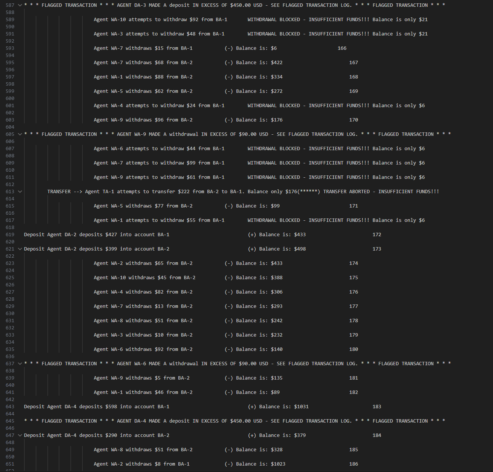

This project was a display in using Java to create and utilize synchronized threads. It simulates banking transactions between two bank account. The programs runs autonomously without user input (apart from starting it), and can take multiple actions. It may deposit money into either of the two accounts, withdraw money from either account if they have enough balance, transfer money between accounts if there is enough balance, flag transfers if they are too high, and run internal/external audits. Certain actions like transferring might be cancelled if both accounts are occupied.

This project taught me a lot. It gave me valuable experience and knowledge for working with threads and how threads work as a whole. I learned how locking works, and how to send out a signal to threads to lock/unlock them. I also learned about intetional sleep timers to only allow threads to perform an action every so often and outputting specific information with timestamps to files. This helped me become a better and more professional programmer, learning more tools and tactics.